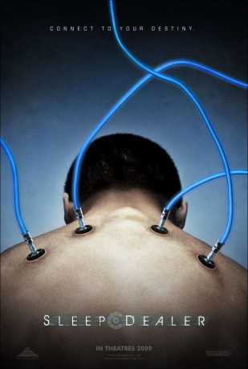

#10761 Sleep Dealer
 
 IMDB-Wertung: 5.9 / 10
IMDB-Wertung: 5.9 / 10  Metascore: 59
Metascore: 59 
Mexico City, die nahe Zukunft. Die Grenzen sind geschlossen, aber das Netzwerk ist offen. Die Wasser-Reserven werden von einer großen Firma kontrolliert, ihr Zugang ist militärisch geschützt. Der High–Tech Freak „Memo“ wird irrtümlich für einen Aqua-Terroristen gehalten, sein Haus und seine Famlie werden von einer ferngelenkten Rakete ausgelöscht. Memo flieht. Er findet Arbeit als billiger Netzarbeiter, Schnittstellen werden in seinem Körper implantiert. Angeschlossen ans Netzwerk steuert er Arbeitsroboter auf einer amerikanischen Baustelle. Dann trifft er die Journalistin Luz, einen Sleep Dealer, die ihre Träume und Gedanken über das Netzwerk an zahlungswillige Kunden verkauft. Aber wenn Träume wahr werden, kann die Realität zum Albtraum werden. Memo und Luz beschließen das System zu überlisten und Rache zu nehmen.
Jahr: 2008
Dauer: 89 Minuten
FSK: 16
Land: USA Studio: Maya EntertainmentTonspuren: DTS - ,
Untertitel:
Auflösung: 1080p (1920x1040) Größe: 10649 MB
Genre: Thriller, Drama, Sci-Fi, Liebe
Regisseur: Alex Rivera
Drehbuch: Alex Rivera, David Riker, Alex Rivera
Soundtrack: tomandandy
Darsteller:
- Luis Fernando Peña als Memo Cruz
 Tenoch Huerta als David Cruz
Tenoch Huerta als David Cruz Jacob Vargas als Rudy Ramirez
Jacob Vargas als Rudy Ramirez Leonor Varela als Luz Martínez
Leonor Varela als Luz Martínez- Emilio Guerrero als Ricki
- Giovanna Zacarías als Bertha
- Marius Biegai als Camera man (uncredited)
- Metztli Adamina als Dolores Cruz
- José Concepción Macías als Miguel Cruz
- Gregg Lucas als Drones TV Host
- Martín Palomares als Gus Panchano
- Sean Garnhart als Rudy's Commander
 Guillermo Ríos als Rudy's Supervisor
Guillermo Ríos als Rudy's Supervisor- Montserrat Revah als Luz's Computer
- Miguel A. Saldaña als Coyotek #1
- Sergio Limon als Coyotek #2
- José Luis Méndez als Coyotek #3
- Carlos Valencia als Twiggy
- Polo Torres als Rana
- Luis Romero als
- Meche Navarro als Bartender
- Maria Paniagua als Node Girl
- Israel Torres als Coyotek
- Roberto Reyes als Antonio
- Jake Koenig als Foreman
- Guillermo Meyer als Photographer
- Norma Pablo als Lupe
- Vicente Huezo als Clerk
- Jorge Zepeda als Rodolfo Ramirez
- Andaluz Russell als Angie Ramirez
- Francisco Valdez als Chino
- Ursula Tania als Prostitute (uncredited)
Datei: X:\2008(N-Z)\Sleep Dealer (2008, FSK16, 1920x1040).mkv seit 22.02.2019
Festplatte: HD 2008(G-Z)-2009(A-F)
 Es gibt insgesamt 91 Filme in der Gruppe '2008(N-Z)'
Es gibt insgesamt 91 Filme in der Gruppe '2008(N-Z)'